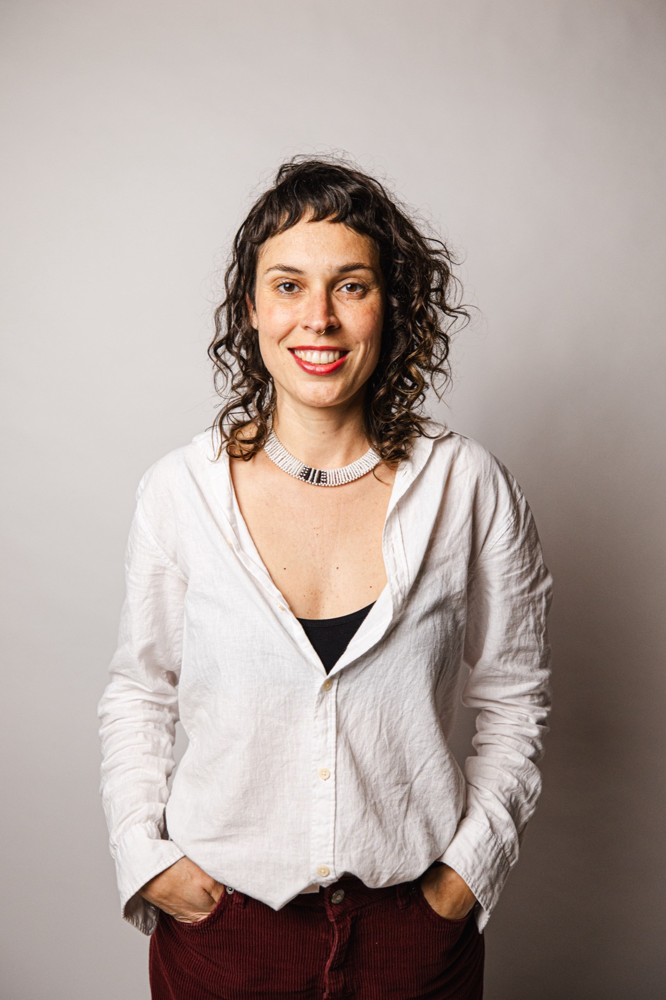
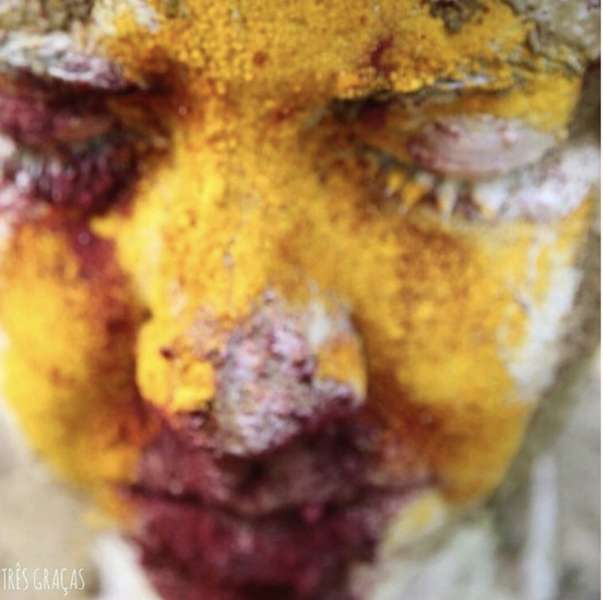
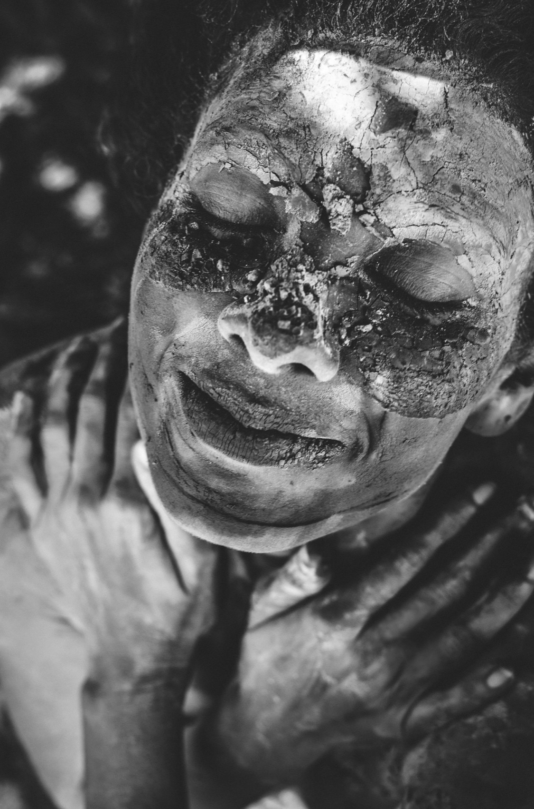
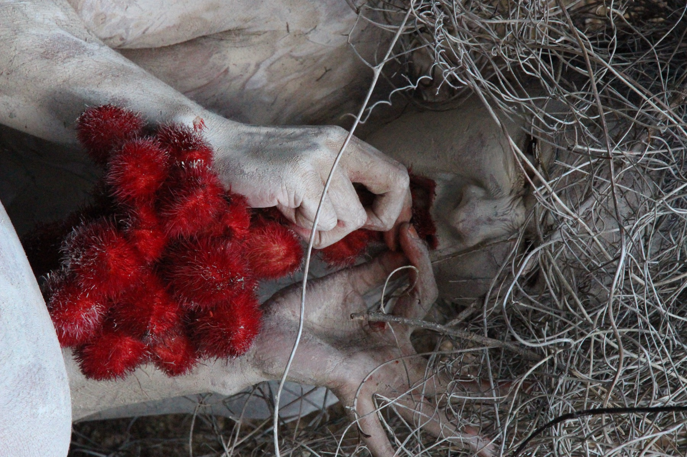

Eliza Makray
Arte, natureza e territorialidade como caminhos de criação.

Eliza MakrayArte, natureza e territorialidade
Eliza Makray (1987) é mãe e artista multidisciplinar brasileira cuja prática artística se enraíza na escuta sensível das expressões da natureza, na valorização do fazer manual e no resgate de saberes ancestrais. Seu trabalho busca desenvolver e inspirar uma expressão criativa autêntica, profundamente conectada com o corpo, com a própria história e com a Terra e reconhece a arte como uma ferramenta política transformadora.
Graduada em Naturologia, com especialização em saúde da mulher, formou-se doula e aprofundou seus estudos sobre a antroposofia e a terapia artística, com passagem por diversos ateliês ao longo da vida. Sua formação reverbera em sua prática artística, que compreende o ato criativo como um ritual alquímico de autoconhecimento e conexão com o meio ambiente e utiliza pintura, desenho, colagem, bordado, fotografia, escultura, vídeos, performances e instalações como meios de expressão.
A artista é reconhecida pela sua pesquisa botânica e pelo uso de tintas naturais, ferramentas e suportes artísticos produzidos artesanalmente a partir de plantas, minerais e resíduos orgânicos. Esse domínio técnico não se limita à produção de materiais, mas se entrelaça com uma poética ecológica e ancestral, na qual cada pigmento e matéria-prima carrega uma origem e uma história. A produção das tintas e a escolha dos materiais tornam-se parte do processo artístico, transformando-se em um ato de respeito aos ciclos naturais e de valorização da autonomia criativa do artista.



Exposições
Individuais
- 2025
Musas em Retratos: 8 inspirações em Florianópolis — Galeria Lama, Florianópolis.
- 2025
Terra Fértil — Galeria Lama, Florianópolis.
- 2025
Musas — Festival Natural, Florianópolis.
- 2025
Musas — Galeria Venere, Florianópolis.
- 2024
Musas — Galeria Vinhos e Versos, Florianópolis.
Coletivas
- 2026
Raízes e Reflexos: A Arte de Santa Catarina — Centro Integrado de Cultura (CIC), Florianópolis.
- 2025
Abrindo a Caixa Preta — exposição fotográfica, Florianópolis.
- 2025
Arte do Bosque II — Bosque 16, Florianópolis.
- 2025
Florir o Invisível — Instituto Casa Nobre, Guarda do Embaú.
- 2025
Desengavetar Desejos — Galeria Veras, Florianópolis.
- 2025
Noite de Máscaras — Galeria Lama, Florianópolis.
- 2025
Musas em Retratos — Futuro Ancestral — Maratona Cultural, Florianópolis.
- 2024
A Cor da Terra — exposição coletiva da oficina com geotinta para as crianças do Instituto Reverbera, Galeria Lama, Florianópolis.
- 2024
Musas — Festival Natural, Florianópolis.
- 2022
As Cores de Cada Vida — exposição coletiva itinerante, Santa Catarina.
- 2020
Musas em Retratos — Festival Expancine, edição Mulheres Catarinenses, Florianópolis.
Residências artísticas
- 2025
Residência de Fotografia — Madonnas e Fridas: laboratório criativo de maternidades, com Ana Sabiá, Galeria Veras.
- 2025
Residência Artística: Desengavetando Desejos, com Guilherme Bruschi, Galeria Veras.
- 2024
Cuerpos Fructíferos, por Oriana Orozco, Casa Ventana.
Curadoria
- 2025
Noite de Máscaras — exposição coletiva, Galeria Lama (curadoria de Eliza Makray).
Formação em arte
- 2026
Oficina "Da Curadoria à Expografia", com Meg Tomio Roussenq, Fundação Cultural Badesc.
- 2026
Curso Que Doidice é essa: projeto colonial, exclusão social e loucura, com Ana Carolina Dias — BRAVA, online.
- 2026
Oficina Taanteatro & Ecoperformance, com Maura Baiocchi, Wolfgang Pannek e Rodrigo Marcó del Pont, online.
- 2026
Oficina Profissão Curador: domine os bastidores da curadoria, com Vanessa Bortulucce — EBAC.
- 2025
Curso Básico de Fotografia Digital, com Flávio Veloso, Florianópolis.
- 2025
Oficina de máscaras, com Emy Infante, Florianópolis.
- 2025
Oficina de máscaras, com Daniela Paz Branttes, Ateliê de Eliza Makray, Florianópolis.
- 2025
Oficina de máscaras, com Daniela Paz Branttes, TAB Estúdio Criativo, Florianópolis.
- 2025
Oficina de Cianotipia, Museu Escola de Santa Catarina.
- 2024
Participou da série documental Habitat Nuestra, por Habitat Nuestra.
- 2024
Co-fundadora da coletiva de bordado livre Linhas do Desterro, Florianópolis.
- 2021–23
Curso Tintas Naturais com Jhon Bermond — online (2021), Caapora, Florianópolis (set. 2022), Sítio Açucena, Florianópolis (mar. 2023).
- 2022
Oficina de Tintas Naturais com Roberta Kremer, Florianópolis.
- 2017
Curso Tingimento Natural com Eber, da Etnobotânica, no Sítio, Florianópolis.
- 2015
Formada no curso Futuro da Aprendizagem, pela Associação Antroposófica Sagres.
- 2015
Graduou-se em Naturologia Aplicada, pela Universidade do Sul de Santa Catarina (UNISUL), Palhoça.
- 2012
Cursou a formação em Terapia Artística, na Sagres, Florianópolis.
- 2014
Aulas de expressão corporal e teatro com a italiana Enrica Dal Zio, Florianópolis.
- 2009
Curso The Art of Hosting, Istambul, Turquia.
- 2006
Cursou Artes Plásticas na Fundação Armando Álvares Penteado (FAAP), São Paulo.
- 1997–2004
Participou do atelier de arte da artista Vera Ferro, em Campinas.
Percussão
- 2023–25
Percussionista nos blocos de carnaval Samambloco, Florianópolis.
- 2023
Percussionista na fanfarra feminista carnavalesca Filhas e Filhes de Eva no Jardim das Delícias, Florianópolis.
- 2019
Percussionista no bloco de carnaval da cultura Mandén Ikanawá, Florianópolis.
- 2017
Musicista no espetáculo O Quarto Palco, Florianópolis.
- 2016–20
Grupo Kono, espetáculo Kono o Pequeno Grande Pássaro, como musicista e atriz.
- 2012–17
Grupo de percussão, dança e performance feminina La Clínica.
- 2013
Aulas de percussão com o senegalês Moussé Dramé, Amsterdã, Holanda.
- 2013
Oficina de percussão da Guiné com Bangali Konate e com Mariama Camara, Florianópolis.
- 2011–14
Aulas de percussão africana com o grupo Abayomi.
Saúde da mulher
- 2016
Artigo científico de conclusão da graduação em Naturologia: "A relação das condições fisiológicas do parto natural à humanização da assistência: uma revisão sistemática" — UNISUL, Florianópolis.
- 2012
Curso Livre de Aprofundamento em Parto Domiciliar, com Naoli Vinaver, Florianópolis.
- 2011
Formação Parto Ativo, com Janet Balaskas, Curitiba.
- 2011
Formação em Educação Perinatal, ONG Amigas do Parto.
- 2007
Formação como Doula, pelo Grupo de Apoio à Maternidade Ativa (GAMA).
Coletivos
- —
Linhas do Desterro — @linhas_do_desterro
- —
Três Graças — @tresgracas
- —
La Clínica — @laclinicabr